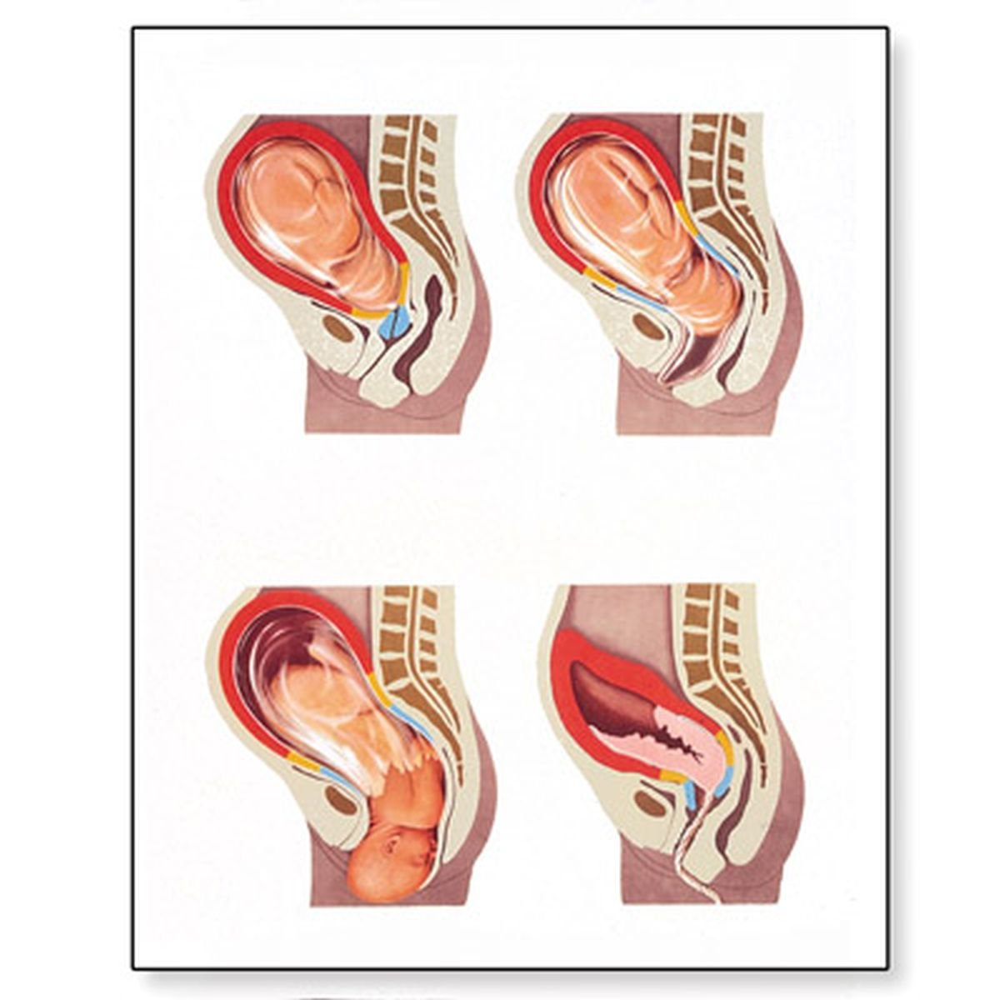

Physiologie de l'accouchement
Définition
L'accouchement est normal quand il survient aprés 47 semaines d'aménorrhée. Il est considéré comme normal lorsqu'il est spontané, naturel, sans aucune aide, et lorsque c'est un accouchement eutocique, c'est é dire que le bassin est normal, et que la présentation du bébé est bonne.
Anatomie
Le fœtus a 3 obstacles é passer :
Le col.
Le bassin.
Le périnée.
- Le passage du détroit supérieur correspond é l'engagement.
- Le passage du détroit moyen correspond é la descente et la rotation pelvienne.
- Le passage du détroit inférieur correspond au dégagement.

Déroulement de l'accouchement
3 phases :
- Dilatation.
- Expulsion.
- Délivrance.
La dilatation
La dilatation se fait sous l'effet des contractions utérines et de la progression du bébé vers le bassin.
La dilatation compléte est de 10cm.
L'expulsion
L'expulsion é lieu lors de la dilatation compléte de col. La poche des eaux est rompue.
Sous l'effet des contractions utérines plus fortes et sous l'effet des contractions abdominales qu'exerce la mére, le fœtus progressera.
La téte descend dans l'excavation, celle-ci sort en sommet, suivi des épaules, du tronc et des jambes.
La délivrance
La délivrance correspond é la section du cordon ombilical et é la sortie du placenta.
La reprise des contractions utérines entraéne le décollement puis l'expulsion du placenta et des membranes.
Voir aussi :
- Module Gynécologie Maternité